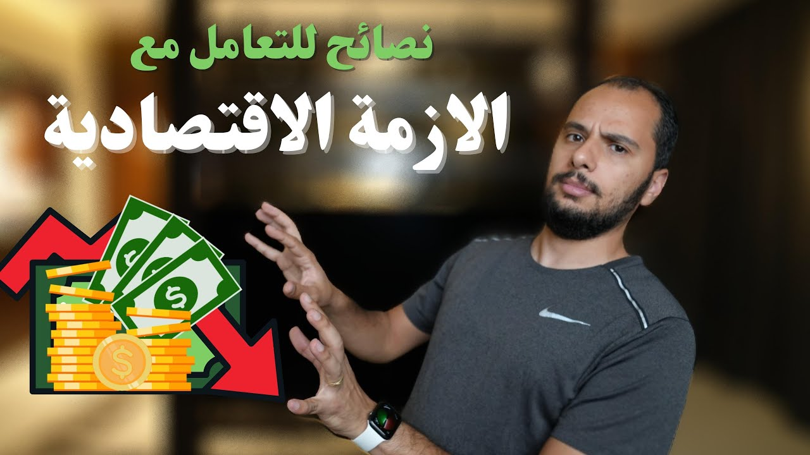

فلوس وشغل
نصائح للتعامل أوقات الأزمات الاقتصادية
الأزمة دي مش الأولى، وده في حد ذاته يطمّن: هتعدّي زي اللي قبلها، ونقدر نتعلم من اللي فات. كام نصيحة بسيطة للأزمة الاقتصادية: ما تخافش لكن احذر، ابعد عن الأخبار السلبية، اعمل دخل إضافي، واستثمر في نفسك.

شغّل الحلقةالعالم بيمر بواحدة من أكبر الأزمات الاقتصادية، نتيجة حاجات كتير أهمها حرب روسيا ومشاكل أوروبا. وعلى الرغم من إن الأزمة دي كبيرة، إحنا محظوظين لإنها مش الأولى.
وده يطمّنا شوية لسببين: الأول إن الأزمة أكيد هتعدّي زي اللي قبلها. والتاني إننا ممكن نتعلم من الأزمات اللي قبل كده، بحيث نخفف من آثار الأزمة دي علينا. وفي المقال ده هقدّم لك كام نصيحة هتنفعك الفترة الجاية.
ليه الخوف أخطر حاجة في الأزمة؟ 0:48
لا تخافوا، لكن احذروا. أخطر حاجة في أوقات الأزمات عمومًا هي الخوف، واللي أحيانًا بيكون ضرره أكبر من الأزمة نفسها. لو تفتكروا في بداية انتشار COVID-19، الخوف والهلع خلّى الناس تنزل تخلّص المخزون الغذائي في دول كتير، وده في حد ذاته كان ممكن يضاعف أضرار الأزمة.
والخوف كمان بيخليك تركّز على الأزمة مش على الحلول، ودي حاجة مش محتاجينها في التوقيت ده. بالعكس، إحنا محتاجين نركّز على اللي ممكن نعمله عشان نعدّي الأزمة. وافتكر إن فيه ناس كتير وشركات قدرت في أوقات الأزمات تعمل نمو تاريخي، وحققت أرباح ضخمة، بس عشان شافوا الفرص واستغلوها، وما خلّوش الخوف يأثر عليهم.
إزاي تتخلص من الخوف وقت الأزمة؟ 1:23
أول حاجة: ابعد عن الأخبار السلبية. الأخبار دي بتكون موجودة في الوقت ده بشكل مكثّف، لأن معظم الناس مهتمة بيها. وبتكتر معاها تحليلات وسيناريوهات سوداوية مش هتستفيد منها بأي حاجة، غير إن خوفك يزيد ووقتك يضيع.
وبعدين بص بصة على التاريخ، ومش لازم التاريخ اللي في الكتب. افتكر الأزمات اللي إنت عدّيت بيها: سواء كانت أزمات كبيرة بنعاني منها كلنا زي أزمة COVID، أو أزمات خاصة بيك إنت، وإزاي كل ده انتهى.
وافتكر القاعدة المهمة اللي بتقول: دوام الحال من المحال. لو الأزمة هتدوم، كان بالأولى أوقات الرخا دامت. فمهما طالت الأزمة، أكيد هتنتهي.
يعني إيه تكون حذر من غير ما تخاف؟ 2:03
طيب، هل معنى كده إننا نتعامل مع الأزمة بلا مبالاة؟ لأ خالص. أنا قلت لك ما تخافش، لكن لازم تحذر. والحذر اللي أقصده هنا إنك تكون مستعد.
مثلًا: تكون عارف إن الأسعار هتغلى، فتبدأ من دلوقتي تشوف إيه الحاجات اللي مش ضرورية وتستغنى عنها. ولو معاك مبلغ، تحاول تستثمره بطريقة ما تخليش قيمته تقل مع التضخم. وغيرها من الاستعدادات اللي بتختلف من شخص لشخص.
ليه محتاج دخل إضافي من دلوقتي؟ 2:24
فيه استعداد تاني لازم تبدأ فيه من دلوقتي: إن يكون عندك دخل إضافي من عمل إضافي. يعني لو إنت بتشتغل في وظيفة 8 ساعات مثلًا، حاول تشتغل في حاجة خاصة بيك إنت، ولو ساعة في اليوم. وتقدر تعمل ده من خلال الإنترنت بسهولة: تقدّم محتوى، أو تشتغل في التجارة الإلكترونية، أو تقدّم استشارات في مجالك.
ولو مش حابب تشتغل من خلال الإنترنت، حاول تنزل شغل إضافي تاني، بس ما يكونش محتاج منك أكتر من ساعتين في اليوم، أو يوم واحد في الأسبوع. فلو إنت محاسب مثلًا، ممكن تلاقي صاحب مصنع، أو واحد عنده محل تجاري ولسه بادئ، وطبيعة شغله مش محتاجة محاسب بدوام كامل. تشتغل معاه يوم واحد في الأسبوع أو ساعتين في اليوم، وإنتوا الاتنين تستفيدوا.
والفكرة في العمل الإضافي مش بس إنك تزوّد دخلك، لأ، كمان إنك تكون فاتح لنفسك فرص مختلفة. عشان لو شغلك الأساسي اتضرر، يبقى العمل الإضافي موجود. ومع الوقت، ممكن عملك الإضافي يدخّلك دخل أكبر من شغلك الأساسي.
إزاي تستثمر في نفسك وقت الأزمة؟ 3:20
نصيحة مهمة تانية كلنا محتاجينها في أوقات الأزمات، وغير الأزمات بصراحة: إنك تستثمر في نفسك، وتزوّد من المهارات والحاجات اللي إنت بتعرف تعملها. لأن الحاجات دي هي اللي تفتح قدامك خيارات وفرص كتير للشغل.
المؤهلات الحقيقية هي الحاجات اللي إنت بتعرف تعملها فعلًا، ومهاراتك الشخصية المختلفة هي اللي بتخليك مؤهل وجاهز للفرص. عشان كده حاول تدرس وتتعلم مجالات جديدة، وتقدر تعمل ده من خلال الإنترنت بسهولة: مثلًا برنامج «مهارات من Google»، أو الدروس التعليمية اللي موجودة على منصات كتير زي YouTube.
نصايح بسيطة، بس محتاجة جدية 3:54
دول كانوا كام نصيحة، وعلى الرغم من بساطتهم، بيحتاجوا جدية كبيرة في تنفيذهم. ولو قدرت فعلًا تستفيد بيهم، هتكون أقوى في أوقات الأزمات. ومش بس هتقلل أضرارها عليك؛ ده إنت ممكن تحوّل الأزمات لفرص كبيرة.
وزي ما بنقول دايمًا: اليوم أفضل من الأمس، وغدًا سيكون الأفضل.
فصول الحلقة
أسئلة شائعة
أعمل إيه عشان ما أخافش وقت الأزمة الاقتصادية؟
ابعد عن الأخبار السلبية والسيناريوهات السوداوية اللي مش هتستفيد منها غير إن خوفك يزيد ووقتك يضيع. وافتكر الأزمات اللي عدّيت بيها وإزاي انتهت، لأن دوام الحال من المحال.
إزاي أستعد لو الأسعار هتغلى؟
ابدأ من دلوقتي تشوف إيه الحاجات اللي مش ضرورية وتستغنى عنها. ولو معاك مبلغ، حاول تستثمره بطريقة ما تخليش قيمته تقل مع التضخم. والاستعدادات دي بتختلف من شخص لشخص.
أعمل دخل إضافي إزاي وأنا عندي وظيفة؟
لو بتشتغل 8 ساعات مثلًا، اشتغل في حاجة خاصة بيك ولو ساعة في اليوم، من خلال الإنترنت: محتوى أو تجارة إلكترونية أو استشارات في مجالك. أو شغل إضافي ما ياخدش أكتر من ساعتين في اليوم أو يوم واحد في الأسبوع، زي محاسب بيشتغل مع محل لسه بادئ.
ليه أستثمر في نفسي وقت الأزمة؟
لأن المهارات والحاجات اللي إنت بتعرف تعملها فعلًا هي اللي بتفتح قدامك خيارات وفرص كتير للشغل. ومهاراتك الشخصية المختلفة هي اللي بتخليك مؤهل وجاهز للفرص.